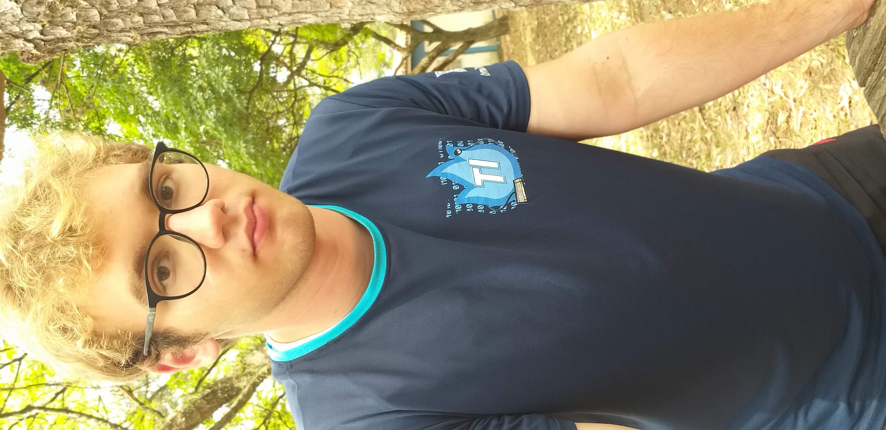
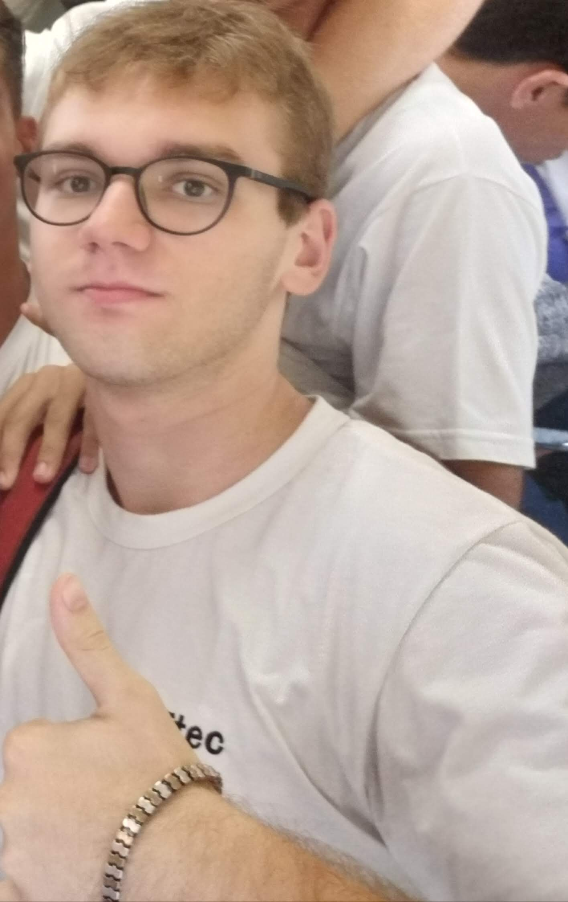

Igor Marciano
vulgo Macaco albinoSeja muito bem-vindo à pagina do membro Marciano, um dos membros iniciais e principais do grupo Canarinho Pistola, responsável por realizar a dieta do grupo.
 Marciano é responsável por ser o BodyBuilder do grupo, responsável por manter o time informado do mundo bodybuilder e também do mundo do futebol, e por realizar ótimos poemas e redações.
Além disso, seu foco na dieta é incrível, todos os dias leva sua marmita com frango, batata e banana com aveia e mel e mantem sua alimentação em dia e seus exercícios em dia na academia.
"Fazer parte dos Canários é legal, esse grupo é muito empolgante, todos os dias são alegres e felizes; Esse grupo é muito bom, não tem energia ruim aqui"
- Lucas Marciano
- Itu
- Solteiro
- Centro-Avante
- BodyBuilder
Perguntado sobre uma palavra que define o grupo, Marciano disse: "Alegre 🤩" - o motivo é que não existe lugar mais alegre e feliz do que esse grupo.